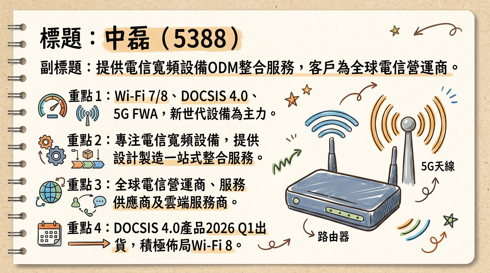
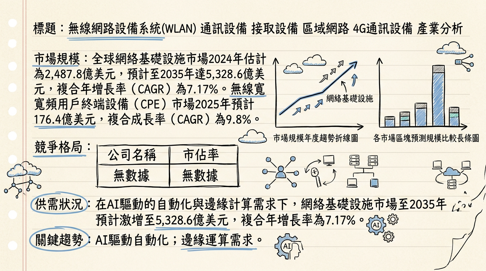
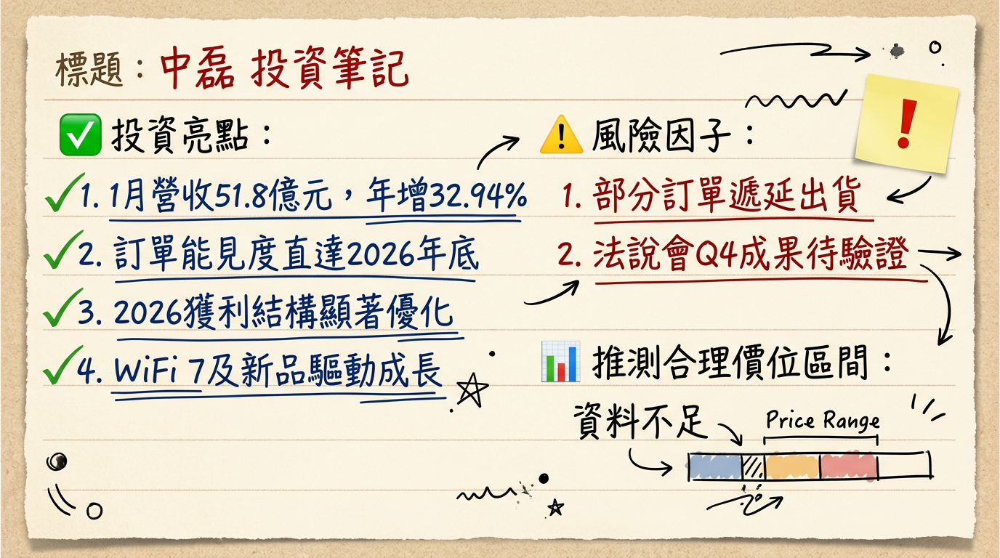

5388 中磊 深度研究報告
一句話摘要
中磊（5388）作為電信寬頻設備ODM龍頭，透過積極佈局Wi-Fi 7/8、DOCSIS 4.0、5G FWA與邊緣AIoT等新世代高毛利產品，並策略性擴充菲律賓及墨西哥廠產能，預計在2026年擺脫2025年庫存調整的影響，營運重返成長軌道，法人預期2026年EPS上看6.6~7.74元，成長動能強勁。
公司概覽
中磊電子（5388）是一家電信寬頻專業設備ODM製造商，提供從產品設計、軟體客製化到全球製造的一站式整合服務，主要客戶為全球電信營運商及服務供應商。公司近年積極佈局新世代產品，包括Wi-Fi 7/8、DOCSIS 4.0設備、5G 固定無線接入 (FWA) 設備、邊緣AI物聯網 (Edge AI IoT) 設備以及分散式局端 (DAA) 產品，以搶攻全球寬頻升級與AI應用商機。
營收結構（2025年前三季）
| 業務類型 | 營收佔比 | 主要產品線 |
|---|
| 寬頻終端設備 (Broadband CPE) | 59% | 家用Wi-Fi路由器、Cable Modem、光纖設備(FTTx/GPON)、5G FWA |
| 企業級產品 (Enterprise) | 23% | 商用路由器等 |
| 基礎設施暨物聯網 (Infrastructure & IoT) | 17% | Small Cell小型基地台、智慧家庭監控設備、邊緣AI物聯網設備 |
製造基地與營收貢獻
中磊在全球策略性佈局五大生產基地，包括蘇州廠、菲律賓廠、印度廠、台灣廠、墨西哥廠。
- 菲律賓廠： 目前已躍升為中磊最大的生產基地，佔整體產能約七成。
- 大陸生產基地： 主要供應大陸本地、歐洲、亞洲、印度等非美市場。
- 墨西哥廠： 正積極擴充產能，將扮演未來佈局北美市場的關鍵角色。
- 北美市場： 貢獻中磊營收超過七成，且營收比重持續攀升。
核心競爭優勢
新世代技術領先佈局： 中磊在Wi-Fi 7/8、DOCSIS 4.0、5G FWA和邊緣AIoT等關鍵新技術領域擁有完整產品線，能提供客戶端對端解決方案，掌握產業升級趨勢。
全球化產能分散策略： 為因應地緣政治風險與北美關稅變動，公司積極擴大菲律賓及墨西哥等非中國產能比重，其中菲律賓廠產能已達七成，墨西哥廠也將顯著擴充，確保供應鏈韌性並降低營運成本。
深耕電信客戶關係與多元拓展： 中磊與全球電信營運商及有線電視業者建立長期合作關係，北美市場營收佔比已逾七成。同時，邊緣AIoT產品線成功拓展至雲端服務供應商（CSP）客戶，開啟新的成長空間。
高單價新產品優化毛利率： Wi-Fi 7、10G PON、DOCSIS 4.0等新產品不僅帶動營收成長，其較高的單價與毛利率也有助於優化公司整體獲利結構。
財務分析
月營收趨勢（最近 6 個月）
| 月份 | 金額 (新台幣億元) | 月增率 MoM | 年增率 YoY |
|---|
| 2026年1月 | 51.81 | -16.91% | +32.94% |
| 2025年12月 | 62.35 | +28.36% | +17.22% |
| 2025年11月 | 48.57 | +5.86% | +9.58% |
| 2025年10月 | 45.88 | -0.62% | +24.93% |
| 2025年9月 | 46.17 | -4.93% | +9.51% |
| 2025年8月 | 48.56 | -7.92% | +17.54% |
2026年1月營收達51.81億元，年增率高達32.94%，創同期次高，顯示客戶需求強勁，且部分2025年第四季訂單遞延至2026年第一季，帶動首季「淡季不淡」。
季度財務數據（最新一季：2025年第三季）
* 季營收：147.47億元，季增20.73%，年增9.56%。
* 毛利率：14.21%。
* 營業利益：4.8億元，季增25.7%，年減32.3%。
* EPS：1.00元。
分析： 2025年第三季營收呈現季增與年增，顯示營運回溫。然而，毛利率與營業利益率較去年同期下滑，反映了記憶體等零組件成本上漲的壓力以及客戶庫存調整導致產品組合的變化。
全年度營收與 EPS
| 年度 | 營收 (新台幣億元) | EPS (新台幣元) |
|---|
| 2024年 (實際) | 567.89 | 7.74 |
| 2025年 (預估) | 539.97 (FactSet中位數) | 4.57 (FactSet中位數) |
| 2026年 (預估) | 624.07 (FactSet中位數) | 7.74 (FactSet中位數) |
- 2025年EPS預估已從原先的5.14元下修至4.57元 (FactSet)。
- 中國信託綜合證券預估2025年EPS約4.4元，2026年上看6.6元。
- 另有法人機構平均預估2026年稅後純益有望較2025年成長三成，EPS介於6.59~8.35元。
法說會重點 (2025年12月19日及後續發言)
- 營運展望： 管理層表示，電信訂單能見度已看到2026年底，2026年將是「值得期待的一年」，營運重返成長軌道。歐美客戶庫存調整已告一段落。
- 產品線： Wi-Fi 7、10G PON、DOCSIS 4.0等新一代產品是2026年營收增長動能。邊緣AI與FWA產品陸續出貨，新案子包括智慧物聯網產品與分散式局端產品也將小量出貨。
- 季度預估： 2025年第四季營收預估將不低於第三季，且部分訂單將遞延至2026年第一季，使傳統淡季不淡。
- 毛利率： 高單價產品如WiFi 7及DOCSIS 4.0將助攻毛利率，儘管記憶體等零組件漲價形成挑戰，公司將透過經濟規模及費用率控管維持獲利穩健。
- 產能佈局： 菲律賓產能佔比已達70%，墨西哥廠持續擴建，以服務北美客戶。
券商觀點
目標價與評等
| 券商名稱 | 目標價 (新台幣元) | 評等 | 日期 |
|---|
| FactSet (綜合7位分析師) | 115 | - | 22/12/2025 |
| 中國信託綜合證券 | 90 | - | 09/01/2026 |
FactSet於2025年12月8日將中磊2025年EPS預估中位數由5.14元下修至4.57元。多家法人維持「增加持股」評等。
財報深度分析
利潤率趨勢（近 8 季）
| 季度 | 毛利率 (%) | 營業利益率 (%) | 稅後淨利率 (%) |
|---|
| 2025Q3 | 14.21 | 3.22 | 2.01 |
| 2025Q2 | 16.58 | 3.10 | 2.76 |
| 2025Q1 | 19.06 | 3.17 | 2.69 |
| 2024Q4 | 18.07 | 5.20 | 3.77 |
| 2024Q3 | 17.99 | 5.21 | 4.06 |
| 2024Q2 | 17.66 | 4.94 | 3.98 |
| 2024Q1 | 17.34 | 5.29 | 4.17 |
中磊的毛利率在2024年維持在17%以上，但進入2025年，雖Q1一度達到19.06%，但隨後下滑至Q3的14.21%。主要原因為記憶體等關鍵零組件成本上漲，對毛利造成壓力，以及客戶庫存調整影響產品組合。營業利益率與稅後淨利率也呈現類似下滑趨勢，反映了成本壓力與市場競爭。公司正積極與客戶協商，希望共同分攤上揚成本，並透過高單價新產品出貨來改善獲利結構。
存貨分析
| 季度 | 存貨週轉天數 | 應收帳款收現天數 |
|---|
| 2025Q3 | 116.58 天 | 56.34 天 |
| 2025Q2 | 133.20 天 | 66.78 天 |
| 2025Q1 | 126.97 天 | 83.72 天 |
| 2024Q4 | 97.91 天 | 74.96 天 |
中磊的存貨週轉天數在2025年上半年呈現上升趨勢，至Q2達到133.20天，Q3略為下降至116.58天。2025年前三季存貨水位高達169億元。公司說明這是為因應2025年第四季及2026年第一季的業務需求所進行的策略性備料，並非異常堆積，管理層強調訂單能見度已直達2026年底。應收帳款收現天數在2025年Q1達到高點後，於Q2和Q3呈現下降，顯示應收帳款管理效率有所提升。
資本支出與產能
- 近3年資本支出金額與趨勢： 未找到2024-2026年具體的資本支出金額數據。
- 未來資本支出計畫與預計新增產能： 中磊的資本支出主要聚焦於全球化生產佈局。
*
菲律賓廠： 在第二期產能加入後，已佔整體產能達七成。
* 墨西哥廠： 將是未來一到兩年積極擴充產能的重點，並導入高度自動化，以就近服務北美市場客戶，應對地緣政治風險與北美關稅變動。
- 折舊攤銷趨勢： 未找到2024-2026年最新的折舊攤銷趨勢數據。
其他財報重點
- 負債比率： 2025Q3負債比為67.62%，較前一季下降，顯示財務結構穩健。
- 自由現金流量趨勢：
| 季度 | 自由現金流量 (百萬新台幣) |
|---|
| 2025Q3 | -1,188,024 |
| 2025Q2 | 836,625 |
| 2025Q1 | 1,859,104 |
| 2024Q4 | -740,190 |
中磊的自由現金流量在2025Q1達到高峰後，於Q2下降，Q3轉為負值。這可能與策略性備料導致的存貨增加以及營業活動現金流的變化有關。
股權異動
- 近期董監事/大股東申報轉讓紀錄： 未找到2024-2026年的申報轉讓紀錄。
- 庫藏股買回紀錄： 未找到2024-2026年的庫藏股買回紀錄。
- 發行可轉換公司債（CB）： 未找到2024-2026年發行可轉換公司債的紀錄。
- 現金增資或減資計畫： 未找到2024-2026年的現金增資或減資計畫。
股利政策
中磊的股利政策以現金股利為主。
- 2025年度 (發放年度)： 現金股利 4.6 元。
- 2024年度 (發放年度)： 現金股利 5.0 元。
產業分析
產業全球市場規模
- 全球電信設備市場： 預計2025年達3,426.2億美元，2026年增長至3,686億美元，至2034年將達6,614.3億美元，預測期內CAGR為7.58%。
- 全球網絡基礎設施市場： 2024年估計2,487.8億美元，2025年成長至2,666.1億美元，2026年達2,857.3億美元，至2035年有望激增至5,328.6億美元，CAGR為7.17%。
- 無線寬頻用戶終端設備（CPE）市場： 預計2025年176.4億美元，2026年增長到193.6億美元，CAGR為9.8%。預計到2030年達280.5億美元，CAGR為9.7%。
- 全球網路設備市場： 預計從2024年582.4億美元，成長到2033年1,110.9億美元，CAGR達7.44%。
供需狀況： 電信設備市場在經歷連續兩年投資下滑後，2025年上半年已止跌復甦，全球總收入同比增長4%。Dell'Oro Group預計2025年全球六大電信設備領域總收入將增長2%至3%。然而，
記憶體等關鍵零組件存在供不應求且價格上漲的狀況，預計持續至2026年6月，對網通設備製造商的成本和毛利率構成壓力。
產業平均毛利率水準： 網通設備產業毛利率因產品組合、技術門檻和市場競爭差異顯著。高階、具備軟體整合能力的廠商毛利率較高（如Arista Networks 62-63%，Cisco 66%），而ODM/OEM廠商則面臨較大的成本壓力。中磊2025年前三季毛利率為16.4%，預計2026年仍可能受記憶體成本影響。
競爭格局
全球前 5 大電信設備公司市佔率 (2025年上半年)
| 排名 | 公司名稱 | 全球市場份額 (2025年上半年) |
|---|
| 1 | 華為 | 31% |
| 2 | 諾基亞 | 13% |
| 3 | 愛立信 | 12% |
| 4 | 中興通訊 | 10% |
| 5 | 思科 | 4% |
的全球其他地區 Top 5 供應商分別為：華為（21%）、諾基亞（17%）、愛立信（16%）、思科（6%）和 Ciena（5%）。
中磊 vs 主要競爭對手比較
| 項目 | 中磊 (5388) | 主要競爭對手 (網通ODM/OEM同業，如仲琦) |
|---|
| 技術 | Wi-Fi 7/8、DOCSIS 4.0、5G FWA、邊緣AIoT等新世代產品領先佈局。DOCSIS 4.0分散式局端與終端設備雙軌並進。 | 積極導入Wi-Fi 7、DOCSIS 4.0、AI技術導入雲端管理系統。 |
| 產能 | 菲律賓廠佔比近70%，墨西哥廠積極擴充以服務北美。非中產能佔比高，應對關稅風險具優勢。 | 多數同業產能重心放於越南，產能分散策略。 |
| 客戶 | 全球電信營運商、服務供應商。北美市場佔比逾70%且持續增長。客戶群拓展至雲端服務業者 (CSP)。 | 以北美客戶為主。智易、啟碁亦主要客戶為電信業者。 |
| 價格 | 新世代高階產品具定價能力，單價及毛利率高於傳統產品。 | 未有直接價格比較，但整體市場受零組件漲價影響。 |
台灣同業比較 (2025年預估)
| 公司名稱 | 營收規模 (預估) | 毛利率 (預估/前三季) | EPS (預估/前三季) | 說明 |
|---|
| 中磊(5388) | 539.97億元 (FactSet) | 16.4% (Q1-Q3) | 4.57元 (FactSet) | 電信寬頻ODM龍頭，積極佈局新世代產品。 |
| 啟碁(6285) | 1,102.5億元 | 12.48% | 6.41元 | 營收規模最大，客戶以企業端為主。 |
| 智邦(2345) | 營運飛天 (受AI需求) | - | - | AI資料中心主要推手，營運表現突出。 |
| 智易(3596) | - | - | - | 與中磊相似，客戶傾向電信業者。 |
中磊的營收規模小於啟碁，但在毛利率方面，中磊前三季16.4%優於啟碁的12.48%，顯示其產品組合或成本控制較具優勢，儘管面臨記憶體漲價壓力。智邦因受益於AI資料中心需求，營運表現最為強勁。
產業趨勢
Wi-Fi 7 / Wi-Fi 8 技術普及與升級： Wi-Fi 7將在2026年成為市場主流，支援MLO多鏈路技術與320MHz頻寬，滿足高頻寬、低延遲應用，並加速企業級網路更新換代。Wi-Fi 7滲透率預計從2024年的8%提升到2025年的18%。Wi-Fi 8技術已在CES 2026展示。
DOCSIS 4.0 設備部署與分散式接取架構 (DAA)： DOCSIS 4.0搶攻北美有線電視營運商 (MSO) 網路升級需求，提供更高速寬頻服務。DAA解決光纖鋪設「最後幾百米」的挑戰，預計2026年第一季開始出貨。
5G 固定無線接入 (FWA) 設備： 5G FWA被譽為「空中光纖」，是近年成長最快速的項目之一，克服地理限制提供寬頻服務，無需依賴傳統有線基礎設施。
對中磊的機會：
- 新世代產品線推動成長： 中磊佈局的Wi-Fi 7/8、DOCSIS 4.0、5G FWA、邊緣AIoT，完全契合產業趨勢，且單價及毛利率較高，有助提升獲利。
- 北美市場拓展與客戶群多元化： 北美市場營收持續增長，5G FWA增溫帶來顯著成長空間。邊緣AIoT客戶拓展至雲端服務業者，擴大市場潛力。
- 產能全球化分散風險： 菲律賓廠與墨西哥廠的擴產佈局，有效因應地緣政治風險與北美關稅變動，確保供應鏈穩定性。
- 軟硬整合方案差異化： 提供一站式服務及客製化產品，提升市場競爭力。
對中磊的威脅：
- 記憶體等關鍵零組件漲價： AI伺服器需求推升記憶體價格，對路由器等產品成本影響大，預計持續至2026年6月，可能侵蝕毛利率。
- 全球電信業者資本支出調整： 電信業者資本支出重心轉向AI與數據中心基礎設施，可能影響對傳統寬頻設備的需求。
- 市場競爭激烈： 網通設備市場競爭者眾，需要持續創新保持技術領先。
- 庫存水位管理： 策略性備料雖必要，但若市場需求不如預期，仍存在庫存去化風險。
相關投資題材：
- 邊緣 AI 物聯網 (Edge AI IoT)： 中磊最直接的AI連結。產品結合感測、邊緣運算與AI分析能力，應用於智慧家庭、安全監控及企業，提升產品單價與毛利。
- AI 驅動的次世代網通方案： CES 2026和MWC 2026展出AI驅動創新技術，顯示中磊朝智慧化解決方案發展，提升產品附加價值。
- 網通基礎設施作為 AI 運行神經系統： 中磊提供的網路基礎設施是支撐生成式AI、自動駕駛與工業物聯網(IIoT)的關鍵，隨著AI應用普及，高速網路需求間接為其帶來機會。
近期催化劑
- 2026年3月10日 法說會： 公布2025年第四季營運成果及市場展望，市場關注其對2026年的最新指引。
- 2026年2月9日 1月營收強勁： 公佈1月營收51.8億元，年增32.94%，創同期次高，顯示淡季不淡，訂單遞延效益顯現。
- 2026年1月29日 搶進DOCSIS 4.0商機： 宣布搶進北美DOCSIS 4.0升級商機，分散式局端產品預計2026年Q1出貨。
- 2026年1月5日 電信訂單能見度至2026年底： 公司釋出樂觀營運展望，電信訂單能見度已直達2026年底，預期2026年將重返成長軌道，高單價產品將助攻毛利率。
- 2025年12月19日 法說會： 指出2025年營運逐季回溫，第四季營收將不低於第三季，部分訂單遞延至2026年Q1。
- 三大法人買賣超 (2026年1月至3月初)：
*
外資： 2026年累計賣超25,380張。
* 投信： 2026年累計賣超3,362張。
* 自營商： 2026年累計買超1,499張。
* 整體三大法人在2026年累計賣超27,242張。
⭐ 成長動能時間軸
| 時間點 | 成長動能類型 | 具體內容 |
|---|
| 2025年Q4 | 新產品出貨 | DOCSIS 4.0分散式局端（DAA）產品陸續出貨；5G FWA產品功能提升。 |
| 2025年Q3起 | 新客戶/新市場 | 物聯網設備結合邊緣AI的客戶群從傳統電信商擴展至雲端服務業者 (CSP)，成功為營運注入新活水。 |
| 2025年底 | 產能佈局 | 菲律賓廠產能佔比接近70%，完成第二期擴充。 |
| 2026年Q1 | 新產品出貨 | DOCSIS 4.0分散式局端產品開始大規模出貨，搶攻北美MSO客戶；部分2025年Q4訂單遞延，帶動營收淡季不淡。 |
| 2026年 | 新技術成為主流 | Wi-Fi 7： 將在2026年成為市場主流，電信客戶積極導入，帶來新一波換機潮。 DOCSIS 4.0： 北美MSO客戶設備升級，預估2026年營收佔比挑戰10%。 5G FWA： 在北美市場出貨增溫，將有顯著成長空間。 邊緣AI 物聯網設備： AI應用可望開始貢獻營收，拉高產品單價與毛利。 企業用設備： 經歷庫存去化後，2026年預期將持續穩健增長。 |
| 2026年 | 擴廠/產能 | 墨西哥廠積極擴充產能，將扮演未來服務北美電信營運商的關鍵角色，未來一到兩年營運規模可望顯著放大，導入高度自動化。 |
| 2026年底 | 訂單能見度 | 電信訂單能見度已直達2026年底，顯示需求穩定且強勁。 |
| 未來1-2年 | 需求面 | 智慧家庭、安全監控、企業應用、IP影音串流器等終端應用對高速、智慧聯網設備需求持續增長。 |
2026 展望
中磊預期2026年營運將重回強勁成長軌道，主要驅動力來自：
- WiFi 7滲透率提升： 將成為市場主流，帶來新的換機需求。
- DOCSIS 4.0與分散式接取架構 (DAA) 產品放量： 特別是針對北美有線電視營運商的升級需求，高單價產品有助於提升毛利率，預估DAA營收佔比挑戰10%。
- 5G FWA設備出貨增溫： 在北美電信市場將有顯著成長空間，預期出貨量將提升。
- 物聯網結合邊緣AI應用： AI應用可望在2026年開始貢獻營收，並成功拓展至雲端服務業者客戶。
- 北美市場客戶拓展與墨西哥廠產能擴充： 有效鞏固並擴大北美市場份額，進一步提升營收比重。
- 企業用設備恢復成長： 經歷庫存去化後，預期將持續增長。
管理層預期2026年全年獲利結構有望顯著優化，並重申2026年是值得期待的一年。法人機構平均預估年度稅後純益有望較2025年成長三成，來到22.56億元，預估EPS介於6.59~8.35元之間。FactSet中位數預估營收達624.07億元，EPS達7.74元。
風險因子
- 半導體零組件缺貨與成本上漲： 記憶體等關鍵零組件的成本上漲仍是2026年最大的潛在變數，可能持續對毛利率造成壓力。
- 地緣政治風險與關稅政策變動： 儘管已進行產能分散，但全球貿易政策的不確定性仍可能影響生產排程與成本。
- 網通產業景氣循環： 網通產業本身具有景氣循環與訂單波動特性，需密切關注總體經濟情勢變化。
投資結論
2026年營運復甦確定性高： 隨著歐美客戶庫存調整告一段落，加上Wi-Fi 7、DOCSIS 4.0、5G FWA及邊緣AIoT等新世代產品陸續放量，中磊電信訂單能見度已達2026年底，營運重返成長軌道具高度確定性。
高毛利產品優化獲利結構： 公司積極佈局高單價、高毛利的新產品，例如DOCSIS 4.0分散式局端產品預估2026年營收佔比挑戰10%，有助於抵銷零組件成本上漲壓力，並提升整體獲利能力。
全球化產能佈局降低風險： 菲律賓廠已是最大生產基地（佔比70%），加上墨西哥廠的擴建，有效應對地緣政治風險與北美關稅政策，確保供應鏈穩定並服務北美市場。
AI與物聯網趨勢受惠者： 中磊積極發展邊緣AI物聯網設備，並將客戶群拓展至雲端服務供應商，搭上AI浪潮與智能聯網趨勢，為長期成長注入新動能。
估值潛力： 考量2025年EPS預估下修至約4.4-4.57元，以及2026年EPS有望大幅成長至6.6-7.74元，市場預期轉強。結合券商目標價（90-115元），建議投資人可關注。
目標價區間建議： 綜合考量中磊2026年預期EPS 6.6元至7.74元（取 FactSet 中位數），並參考其過去五年平均本益比約15-20倍。
- 若以2026年預估EPS 7.74元計算，給予15-18倍本益比，目標價區間為 116.1元至139.32元。
- 若參考券商目標價，中信證券給予90元，FactSet綜合分析師給予115元。
- 綜合考量，建議目標價區間為 110元至130元。
本報告由 AI 自動產生，資料來源為公開網路資訊，僅供參考，不構成投資建議。產生時間：2026-03-06 14:01
📊 資訊卡


